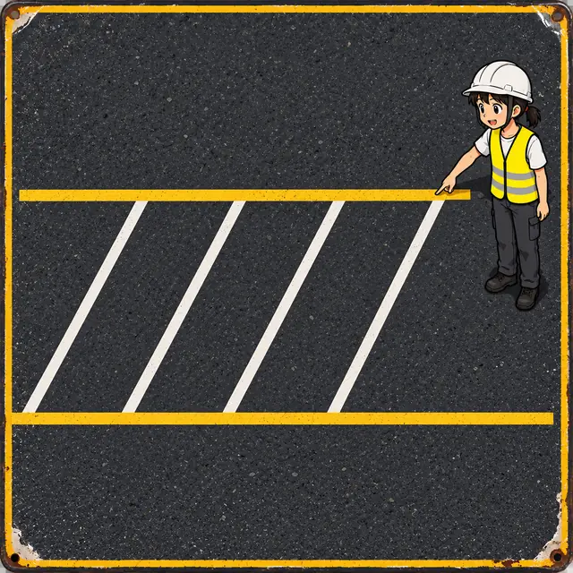
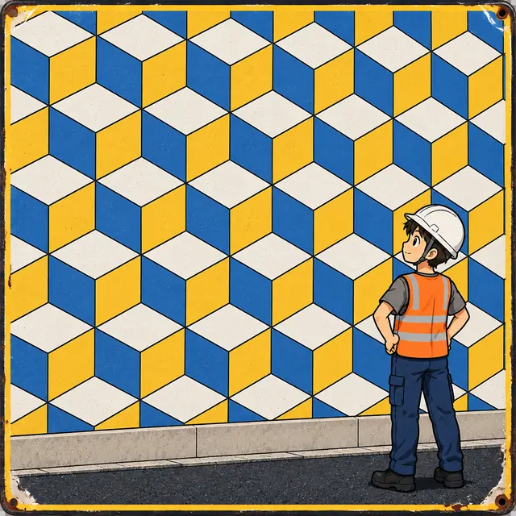
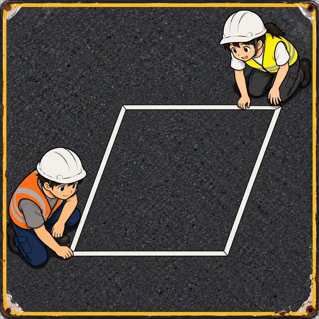
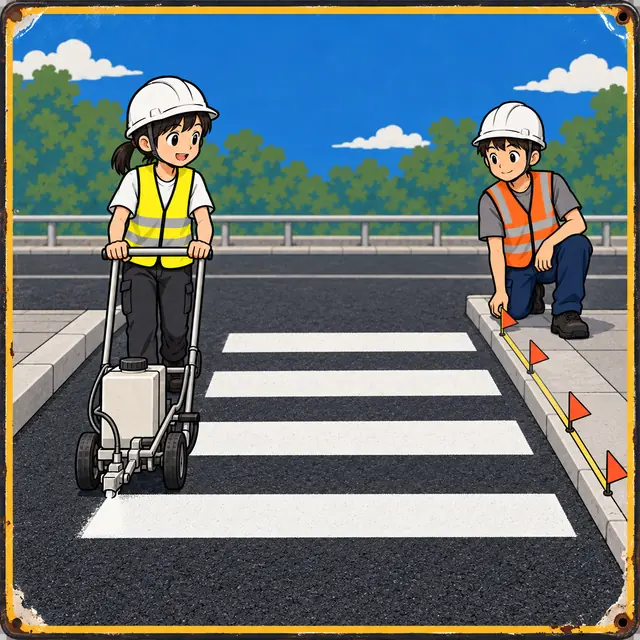
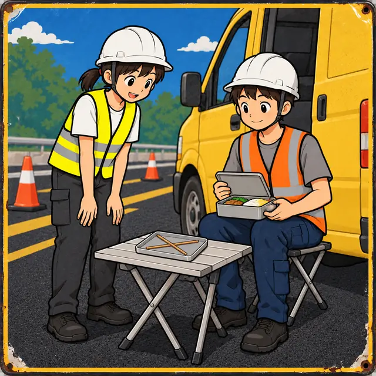
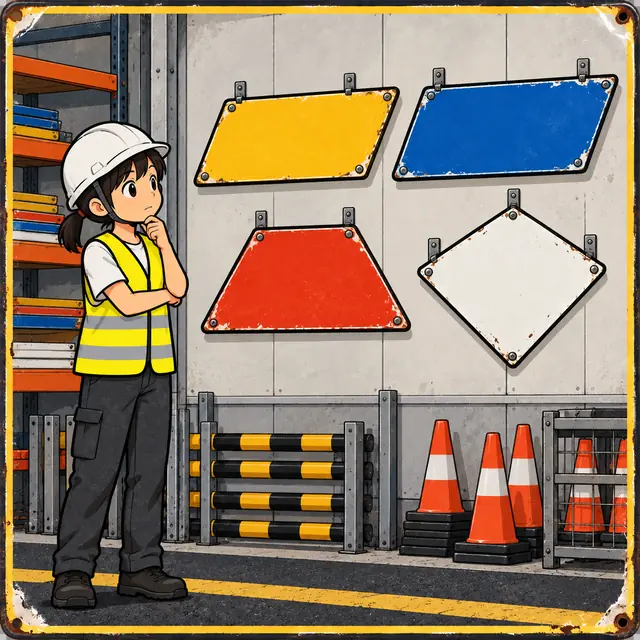
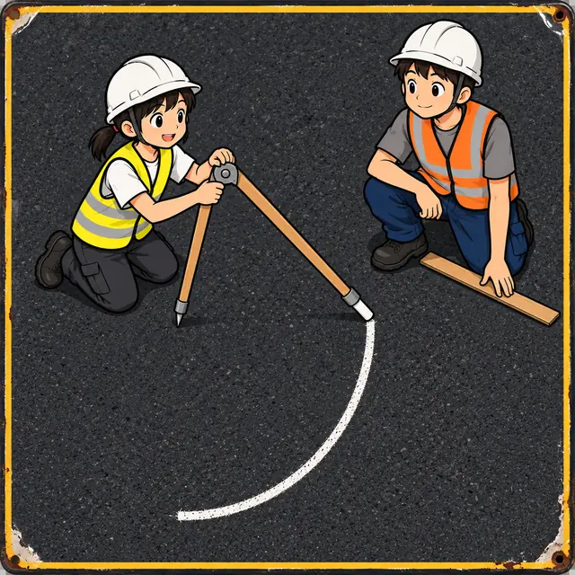

課前暖身漫畫：斜停車格要每格都量角度嗎？
阿平拿著量角器，每畫一條斜線就蹲下來量一次角度，畫得滿頭大汗；小線只用捲尺，在兩條平行的路邊標線上每隔一樣的距離做記號，再一條條連起來。兩條邊線平行、每一段又一樣長，畫出來的每一格自動就是平行四邊形——連角度都不必量，對面的兩個角本來就一樣大。
重點 1：平行四邊形的意義，對角相等、鄰角互補
重點整理與敘述
- 兩雙對邊分別平行的四邊形稱為平行四邊形：\(\overline{AB} \parallel \overline{DC}\) 且 \(\overline{AD} \parallel \overline{BC}\)，記作 ▱\(ABCD\)。頂點要依序繞一圈寫，▱\(ABCD\) 和 ▱\(ADCB\) 是同一個。
- \(\overline{AD} \parallel \overline{BC}\)，截線 \(\overline{AB}\) 造出同側內角：\(\angle A + \angle B = 180^\circ\)；截線 \(\overline{BC}\) 造出 \(\angle B + \angle C = 180^\circ\)。兩式相減得 \(\angle A = \angle C\)，同理 \(\angle B = \angle D\)。
- 所以平行四邊形對角相等、鄰角互補：兩個銳角一樣大、兩個鈍角一樣大，一銳一鈍加起來是 \(180^\circ\)。
- 角用式子表示時，先看兩個角是對角（列「相等」）還是鄰角（列「和為 \(180^\circ\)」）。例：\(\angle B = (2x + 7)^\circ\)、\(\angle D = (3x - 21)^\circ\) 是對角， \[\begin{aligned} & 2x + 7 = 3x - 21 \\ & x = 28 \end{aligned}\] 得 \(\angle B = 63^\circ\)，再由鄰角互補得 \(\angle C = 117^\circ\)。

視覺互動探索：把斜停車格拉斜一點
調整 \(\angle B\) 和斜邊的長，畫布上的四個角都是從頂點座標量出來的。切到「鄰角互補」，看平行的兩條邊線與截線 \(\overline{AB}\) 造出的同側內角。把 \(\angle B\) 調成 \(90^\circ\) 會變成什麼？
形成性評量 (對角相等、鄰角互補)
Q1. ▱\(ABCD\) 中，\(\angle A = (x + 30)^\circ\)、\(\angle C = (3x - 22)^\circ\)，則 \(\angle B\) 是幾度？
解析：答案為 D。\(\angle A\) 與 \(\angle C\) 是對角，相等：
\[\begin{aligned} & x + 30 = 3x - 22 \\ & 2x = 52,\ x = 26 \end{aligned}\]
\(\angle A = 26 + 30 = 56^\circ\)，鄰角互補，\(\angle B = 180^\circ - 56^\circ = 124^\circ\)。
A 錯：那是 \(\angle A\)，題目問的是 \(\angle B\)。
B 錯：把對角當成鄰角，列成 \((x + 30) + (3x - 22) = 180\)，得 \(x = 43\)、\(\angle A = 73^\circ\)，再算出 \(107^\circ\)。
C 錯：\(26\) 是 \(x\)，不是角度。
Q2. ▱\(ABCD\) 中，\(\angle B + 2\angle D = 222^\circ\)，則 \(\angle A\) 是幾度？
解析：答案為 B。\(\angle B\) 與 \(\angle D\) 是對角，相等，所以
\[\begin{aligned} & 3\angle B = 222^\circ \\ & \angle B = 74^\circ \end{aligned}\]
鄰角互補，\(\angle A = 180^\circ - 74^\circ = 106^\circ\)。
A 錯：那是 \(\angle B\)。
C、D 錯：把 \(\angle D\) 當成 \(\angle B\) 的鄰角（\(\angle D = 180^\circ - \angle B\)），會解出 \(\angle B = 138^\circ\)、\(\angle A = 42^\circ\)。
重點 2：好幾個平行四邊形拼在一起：一塊一塊追角
重點整理與敘述
- 圖裡有兩個以上的平行四邊形時，一次只看一個，用對角相等、鄰角互補把角「搬」到要去的地方。
- 搬到同一個頂點之後，再配合其他角的關係：周角 \(360^\circ\)、平角 \(180^\circ\)、對頂角相等、三角形內角和 \(180^\circ\)。
- 平行四邊形的對邊平行，所以對角線與兩條對邊造出內錯角：▱\(ABCD\) 中，\(\angle ADB = \angle DBC\)、\(\angle ABD = \angle BDC\)。
- 例：咖啡館的視錯覺磁磚牆，三塊平行四邊形磁磚圍著 \(O\) 點。若 \(\angle 1 = 100^\circ\)、\(\angle 2 = 130^\circ\)，第三塊在 \(O\) 的角是 \(360^\circ - 100^\circ - 130^\circ = 130^\circ\)，它的鄰角 \(\angle 3 = 180^\circ - 130^\circ = 50^\circ\)。

視覺互動探索：立體方塊磁磚的角
三塊平行四邊形磁磚共用 \(O\) 點。調整 \(\angle 1\)（磁磚 1 在 \(O\) 的角）和 \(\angle 2\)（磁磚 2 在 \(O\) 的對角），畫布會一步一步算出 \(\angle 3\)，並用頂點座標量給你看。兩個角加起來不到 \(180^\circ\) 時，會發生什麼事？
形成性評量 (複合圖形追角)
Q3. 如圖，四邊形 \(ABCE\) 與四邊形 \(ACDE\) 都是平行四邊形。若 \(\angle 1 = \angle ABC = 64^\circ\)、\(\angle 2 = \angle CED = 43^\circ\)，則 \(\angle D\) 是幾度？
解析：答案為 A。
\[\begin{aligned} & \angle AEC = \angle ABC = 64^\circ \\ & \angle AED = 64^\circ + 43^\circ = 107^\circ \\ & \angle D = 180^\circ - 107^\circ = 73^\circ \end{aligned}\]
第一行用 ▱\(ABCE\) 的對角相等，第三行用 ▱\(ACDE\) 的鄰角互補。
B 錯：那是 \(\angle AED\)，還差最後一步。
C 錯：\(180^\circ - 43^\circ\) 只用了 \(\angle 2\)，漏了 \(\angle AEC\)。
D 錯：\(180^\circ - 64^\circ\) 只用了 \(\angle 1\)。
Q4. 如圖，▱\(ABCD\) 中，\(\angle A = 108^\circ\)。若 \(\angle ABD : \angle DBC = 5 : 3\)，則 \(\angle ADB\) 是幾度？
解析：答案為 C。鄰角互補，\(\angle ABC = 180^\circ - 108^\circ = 72^\circ\)，依比例
\[\begin{aligned} & \angle DBC = 72^\circ \times \frac{3}{8} = 27^\circ \end{aligned}\]
\(\overline{AD} \parallel \overline{BC}\)，\(\angle ADB\) 與 \(\angle DBC\) 是內錯角，所以 \(\angle ADB = 27^\circ\)。（驗算：\(\angle ABD = 45^\circ\)，\(180^\circ - 108^\circ - 45^\circ = 27^\circ\)。）
A 錯：那是 \(\angle ABD\)。
B 錯：把 \(\angle A = 108^\circ\) 拿去按比例分，\(108^\circ \times \frac{3}{8} = 40.5^\circ\)；被分成兩份的是 \(\angle ABC\)。
D 錯：那是整個 \(\angle ABC\)。
重點 3：一條對角線分出兩個全等三角形，對邊相等
重點整理與敘述
- 連接對角線 \(\overline{AC}\)。\(\overline{AB} \parallel \overline{DC}\) ⇒ \(\angle 1 = \angle 2\)（內錯角）；\(\overline{AD} \parallel \overline{BC}\) ⇒ \(\angle 3 = \angle 4\)（內錯角）；\(\overline{AC}\) 是共用邊。
- 由 ASA 全等，\(\triangle ABC \cong \triangle CDA\)：任一條對角線都把平行四邊形分成兩個全等三角形。
- 對應邊相等，所以兩雙對邊分別相等：\(\overline{AB} = \overline{CD}\)、\(\overline{BC} = \overline{DA}\)，周長 \(= 2(\overline{AB} + \overline{BC})\)。
- 列方程式時只有對邊才能列等式，鄰邊不一定相等。例：周長 \(30\) 公分、\(\overline{BC} = 2\overline{AB}\)，設 \(\overline{AB} = x\)， \[\begin{aligned} & 2(x + 2x) = 30 \\ & x = 5 \end{aligned}\] 得 \(\overline{AB} = \overline{CD} = 5\)、\(\overline{BC} = \overline{DA} = 10\) 公分。
視覺互動探索：把三角形轉半圈
黃色的 \(\triangle ABC\) 可以繞對角線 \(\overline{AC}\) 的中點 \(O\) 轉動。把「旋轉角度」拉到 \(180^\circ\)，看它會不會剛好蓋住藍色的 \(\triangle CDA\)；再改改邊長和 \(\angle B\)，看周長怎麼算。
形成性評量 (對邊相等)
Q5. ▱\(ABCD\) 的周長是 \(46\) 公分，\(\overline{AB}\) 比 \(\overline{BC}\) 的 \(2\) 倍少 \(1\) 公分，則 \(\overline{AB}\) 是多少公分？
解析：答案為 C。設 \(\overline{BC} = x\)，則 \(\overline{AB} = 2x - 1\)。對邊相等，周長是兩倍的「\(\overline{AB} + \overline{BC}\)」：
\[\begin{aligned} & 2(2x - 1 + x) = 46 \\ & 3x - 1 = 23,\ x = 8 \end{aligned}\]
\(\overline{AB} = 2 \times 8 - 1 = 15\) 公分。
A 錯：那是 \(\overline{BC}\)。
B 錯：\(23\) 是周長的一半 \(\overline{AB} + \overline{BC}\)。
D 錯：\(46 \div 4\) 是把四邊當成一樣長。
Q6. ▱\(ABCD\) 中，\(\overline{AB} = (2a + 3)\) 公分、\(\overline{BC} = (3a - 2)\) 公分、\(\overline{CD} = (5a - 9)\) 公分，則 ▱\(ABCD\) 的周長是多少公分？
解析：答案為 D。\(\overline{AB}\) 與 \(\overline{CD}\) 是對邊：
\[\begin{aligned} & 2a + 3 = 5a - 9 \\ & a = 4 \end{aligned}\]
\(\overline{AB} = 11\)、\(\overline{BC} = 10\)，周長 \(= 2(11 + 10) = 42\) 公分。
A 錯：把鄰邊 \(\overline{AB}\)、\(\overline{BC}\) 列成相等，得 \(a = 5\)，再以四邊都是 \(13\) 算出 \(52\)。
B 錯：\(21\) 只是 \(\overline{AB} + \overline{BC}\)。
C 錯：\(4 \times 11\) 是把四邊都當成 \(\overline{AB}\)。
重點 4：兩條對角線互相平分（但不一定等長）
重點整理與敘述
- 對角線 \(\overline{AC}\)、\(\overline{BD}\) 交於 \(O\)。\(\overline{AD} \parallel \overline{BC}\) 給兩組內錯角，又 \(\overline{AD} = \overline{BC}\)（對邊相等），由 ASA 得 \(\triangle AOD \cong \triangle COB\)。
- 所以 \(\overline{OA} = \overline{OC}\)、\(\overline{OB} = \overline{OD}\)：兩對角線互相平分，\(O\) 是兩條對角線共同的中點。
- 互相平分不代表等長：一般的平行四邊形 \(\overline{AC} \ne \overline{BD}\)；兩條一樣長時是長方形。
- \(\overline{AC} + \overline{BD} = 2(\overline{OA} + \overline{OB})\)。若兩對角線互相垂直，\(\triangle BOC\) 是直角三角形，可以用畢氏定理。例：\(\overline{OB} = 6\)、\(\overline{OC} = 8\) ⇒ \(\overline{BC} = \sqrt{36 + 64} = 10\)。
視覺互動探索：對角線的一半
調整兩條對角線的一半 \(\overline{OA}\)、\(\overline{OB}\) 與它們的夾角。看看 \(O\) 是不是兩條對角線的中點、\(\overline{AC}\) 和 \(\overline{BD}\) 是不是一樣長。把夾角調成 \(90^\circ\)，畫布會用畢氏定理算出邊長。
形成性評量 (對角線互相平分)
Q7. ▱\(ABCD\) 的兩條對角線交於 \(O\)，\(\overline{OA} = 2x + 1\)、\(\overline{OC} = 3x - 4\)、\(\overline{BD} = 18\)，則 \(\overline{AC} + \overline{BD}\) 是多少？
解析：答案為 B。對角線互相平分，\(\overline{OA} = \overline{OC}\)：
\[\begin{aligned} & 2x + 1 = 3x - 4,\ x = 5 \\ & \overline{AC} = 2 \times 11 = 22 \\ & \overline{AC} + \overline{BD} = 22 + 18 = 40 \end{aligned}\]
A 錯：\(11 + 18\) 只用了 \(\overline{AC}\) 的一半。
C 錯：只算了 \(\overline{AC}\)。
D 錯：\(\overline{BD} = 18\) 已經是整條，不必再乘 \(2\)。
Q8. ▱\(ABCD\) 的兩條對角線互相垂直，\(\overline{AB} = 17\)、\(\overline{AC} = 16\)，則 \(\overline{BD}\) 是多少？
解析：答案為 C。設對角線交於 \(O\)，\(\overline{OA} = 16 \div 2 = 8\)。\(\triangle AOB\) 是直角三角形：
\[\begin{aligned} & \overline{OB} = \sqrt{17^2 - 8^2} \\ & = \sqrt{225} = 15 \end{aligned}\]
\(\overline{BD} = 2 \times 15 = 30\)。
A 錯：\(15\) 只是 \(\overline{OB}\)，對角線要乘 \(2\)。
B 錯：\(2 \times 17\) 把邊長當成對角線的一半。
D 錯：\(17 - 8\) 不是畢氏定理。
重點 5：兩條對角線把面積四等分
重點整理與敘述
- 一條對角線把平行四邊形分成兩個全等三角形，各佔一半。
- 兩條對角線把它分成四個三角形：\(\triangle AOD \cong \triangle COB\)、\(\triangle AOB \cong \triangle COD\)；又 \(\overline{OA} = \overline{OC}\)，\(\triangle AOB\) 與 \(\triangle COB\) 等底同高，面積相等。
- 所以四個三角形的面積都相等，各是平行四邊形的 \(\frac{1}{4}\)。例：\(\triangle AOB\) 的面積是 \(9\)，▱\(ABCD\) 的面積就是 \(36\)。
- 延伸：平行四邊形繞 \(O\) 轉半圈會疊回自己，所以任何一條通過 \(O\) 的直線都把它分成面積相等的兩塊；不通過 \(O\) 的直線通常就不行。
視覺互動探索：切蛋糕一樣切停車格
調整停車格的底、高與傾斜，四塊三角形的面積由頂點座標用鞋帶公式算出來。切到「過 \(O\) 的直線」，轉動直線的方向，再把它移離 \(O\)，看兩塊的面積還一不一樣。
形成性評量 (面積四等分)
Q9. ▱\(ABCD\) 的面積是 \(76\)，兩條對角線交於 \(O\)，則 \(\triangle ABD\) 與 \(\triangle BOC\) 的面積和是多少？
解析：答案為 A。對角線 \(\overline{BD}\) 把平行四邊形分成兩半，兩條對角線分成四等分：
\[\begin{aligned} & \triangle ABD = 76 \times \frac{1}{2} = 38 \\ & \triangle BOC = 76 \times \frac{1}{4} = 19 \\ & 38 + 19 = 57 \end{aligned}\]
B 錯：兩塊加起來沒有蓋滿整個平行四邊形（少了 \(\triangle COD\)）。
C 錯：只算了 \(\triangle ABD\)。
D 錯：只算了 \(\triangle BOC\)。
Q10. 如圖，\(P\) 在直線 \(CD\) 上。阿平想過 \(P\) 畫一條直線，把 ▱\(ABCD\) 分成面積相等的兩塊，下列哪一種畫法一定正確？
解析：答案為 B。平行四邊形繞對角線交點 \(O\) 轉半圈會疊回自己，通過 \(O\) 的直線切下的兩塊也會互相疊合，面積一定相等。
A、D 錯：\(\overline{AD}\) 與 \(\overline{BC}\) 的中點連線雖然通過 \(O\)，但它和 \(\overline{CD}\) 平行，\(P\) 不在這條線上，所以 \(P\) 與其中一個中點的連線不會通過 \(O\)。
C 錯：直線 \(PB\) 只有在 \(P = D\) 時才是對角線，現在 \(P\) 在 \(D\) 的外側。
重點 6：判別①② 兩雙對角、兩雙對邊分別相等
重點整理與敘述
- 前面的性質反過來也成立。兩雙對角分別相等：\(\angle A = \angle C\)、\(\angle B = \angle D\)，內角和 \(360^\circ\) ⇒ \(2\angle A + 2\angle B = 360^\circ\) ⇒ \(\angle A + \angle B = 180^\circ\) ⇒ \(\overline{AD} \parallel \overline{BC}\)；同理 \(\overline{AB} \parallel \overline{DC}\)。
- 兩雙對邊分別相等：\(\overline{AB} = \overline{CD}\)、\(\overline{BC} = \overline{DA}\)，連 \(\overline{AC}\)，由 SSS 得 \(\triangle ABC \cong \triangle CDA\)，內錯角相等 ⇒ 兩雙對邊平行。
- 「對」要照頂點順序看：\(\angle A\) 對 \(\angle C\)、\(\angle B\) 對 \(\angle D\)；\(\overline{AB}\) 對 \(\overline{CD}\)、\(\overline{BC}\) 對 \(\overline{DA}\)。
| 依序寫出的四個量 | 相等的是 | 平行四邊形？ |
|---|---|---|
| 角：\(100^\circ\)、\(80^\circ\)、\(100^\circ\)、\(80^\circ\) | 對角 | 是 |
| 角：\(100^\circ\)、\(100^\circ\)、\(80^\circ\)、\(80^\circ\) | 鄰角 | 不一定 |
| 邊：\(4\)、\(6\)、\(4\)、\(6\) | 對邊 | 是 |
| 邊：\(4\)、\(4\)、\(6\)、\(6\) | 鄰邊 | 不一定（箏形） |

視覺互動探索：自己排一個四邊形
「調角度」：設定 \(\angle A\)、\(\angle B\)、\(\angle C\)，\(\angle D\) 由內角和決定。「排邊長」：設定四根標線條的長和 \(\angle B\)。畫布量出兩雙對邊平不平行，看看什麼時候才是平行四邊形；也試試讓相鄰的兩個量相等。
形成性評量 (對角、對邊的判別)
Q11. 下列各組依序是四邊形 \(ABCD\) 的 \(\angle A\)、\(\angle B\)、\(\angle C\)、\(\angle D\)，哪一組的四邊形一定是平行四邊形？
解析：答案為 B。只有 B 是 \(\angle A = \angle C = 68^\circ\)、\(\angle B = \angle D = 112^\circ\)，兩雙對角分別相等。
A、C 錯：相等的是相鄰的兩個角（A 是 \(\angle B = \angle C\)、\(\angle A = \angle D\)），這樣只能保證一雙對邊平行，可能是等腰梯形。
D 錯：四個角加起來是 \(360^\circ\)，但 \(\angle A \ne \angle C\)，不是兩雙對角分別相等。
Q12. 阿平用標線條依序排出四邊形 \(ABCD\) 的 \(\overline{AB}\)、\(\overline{BC}\)、\(\overline{CD}\)、\(\overline{DA}\)，長度如下（公尺），哪一組一定排成平行四邊形？
解析：答案為 C。\(\overline{AB} = \overline{CD} = 8\)、\(\overline{BC} = \overline{DA} = 11\)，兩雙對邊分別相等。
A、B 錯：相等的是鄰邊（A 是 \(\overline{AB} = \overline{BC}\)、\(\overline{CD} = \overline{DA}\)），排出來可能是箏形。
D 錯：\(\overline{AB} = 8 \ne 9 = \overline{CD}\)、\(\overline{BC} = 11 \ne 10 = \overline{DA}\)，兩雙對邊都不相等。
重點 7：判別③ 一雙對邊平行且相等
重點整理與敘述
- 四邊形 \(ABCD\) 中，\(\overline{AD} \parallel \overline{BC}\) 且 \(\overline{AD} = \overline{BC}\)。連 \(\overline{BD}\)：內錯角 \(\angle ADB = \angle CBD\)，由 SAS 得 \(\triangle ABD \cong \triangle CDB\)，於是 \(\angle ABD = \angle CDB\) ⇒ \(\overline{AB} \parallel \overline{DC}\)。
- 所以一雙對邊平行且相等的四邊形是平行四邊形。注意平行和相等要落在同一雙對邊上。
- 斑馬線就是這樣畫的：在兩條平行的路邊線上各量出一樣長的一段，連起來就是平行四邊形。
- 已知三點找第四個頂點 \(D\)：三點各輪流當「對角線的一端」，\(D\) 有三個位置。例：\(A(0, 0)\)、\(B(4, 0)\)、\(C(5, 2)\)，則 \(D\) 可能是 \((1, 2)\)、\((-1, -2)\)、\((9, 2)\)。

視覺互動探索：在平行線上找 D
「兩條平行線」：\(A\)、\(B\) 在直線 \(M\) 上，\(C\)、\(D\) 在直線 \(L\) 上，\(L \parallel M\)。移動 \(D\)，找出讓 \(A\)、\(B\)、\(C\)、\(D\) 成為平行四邊形四個頂點的位置——答案有兩個。「三點找第四點」：移動 \(C\)，看 \(D\) 的三個位置怎麼跟著變。
形成性評量 (一雙對邊平行且相等)
Q13. 坐標平面上有 \(A(-4, 3)\)、\(B(1, 3)\)、\(C(3, 7)\) 三點。若四邊形 \(ABCD\)（頂點依此順序）是平行四邊形，則 \(D\) 的坐標是什麼？
解析：答案為 A。依序是 \(ABCD\)，所以 \(\overline{AD}\) 要和 \(\overline{BC}\) 平行且相等。從 \(B\) 到 \(C\) 是往右 \(2\)、往上 \(4\)，從 \(A\) 也這樣走：
\[\begin{aligned} & D = (-4 + 2,\ 3 + 4) \\ & = (-2, 7) \end{aligned}\]
B 錯：\((8, 7)\) 是平行四邊形 \(ABDC\) 的頂點，順序不對。
C 錯：\((-6, -1)\) 是平行四邊形 \(ACBD\) 的頂點。
D 錯：把 \(D\) 放在 \(A\) 的正上方，那是把它當成長方形；\(\overline{AD}\) 和 \(\overline{BC}\) 不平行。
Q14. 如圖，▱\(ABCD\) 的面積是 \(60\)，\(E\)、\(F\) 分別是 \(\overline{AD}\)、\(\overline{BC}\) 的中點。關於四邊形 \(AFCE\)，下列敘述何者正確？
解析：答案為 A。\(\overline{AE} \parallel \overline{FC}\)（都在 \(\overline{AD}\)、\(\overline{BC}\) 上），而
\[\begin{aligned} & \overline{AE} = \frac{1}{2}\overline{AD} = \frac{1}{2}\overline{BC} = \overline{FC} \end{aligned}\]
一雙對邊平行且相等，所以 \(AFCE\) 是平行四邊形。它的底 \(\overline{FC}\) 是 \(\overline{BC}\) 的一半、高相同，面積是 \(60\) 的一半，\(30\)。
B 錯：\(15\) 是四分之一，那是對角線分出的三角形。
C 錯：一雙對邊平行且相等已經足夠。
D 錯：\(AFCE\) 不是三等分，兩旁的 \(\triangle ABF\)、\(\triangle CDE\) 各佔四分之一。
重點 8：判別④ 兩對角線互相平分
重點整理與敘述
- 四邊形 \(ABCD\) 的對角線交於 \(O\)，\(\overline{OA} = \overline{OC}\)、\(\overline{OB} = \overline{OD}\)。\(\angle AOD = \angle COB\)（對頂角），由 SAS 得 \(\triangle AOD \cong \triangle COB\)。
- 於是 \(\overline{AD} = \overline{BC}\)，而且內錯角 \(\angle OAD = \angle OCB\) ⇒ \(\overline{AD} \parallel \overline{BC}\)：一雙對邊平行且相等，是平行四邊形。
- 所以兩對角線互相平分的四邊形是平行四邊形。兩根長短不同的筷子，中點對齊交叉，四個端點連起來就是平行四邊形。
- 只有一條被平分還不夠：剪刀的支點通常不在兩片刀刃的中點，四個端點連起來不是平行四邊形。

視覺互動探索：兩根筷子交叉
筷子 \(\overline{AC}\) 一定在中點 \(O\) 交叉。調整兩根筷子的長與夾角，再把筷子 \(\overline{BD}\) 的交叉點移離它自己的中點，看四個端點圍成的圖形還是不是平行四邊形。
形成性評量 (對角線的判別)
Q15. 四邊形 \(ABCD\) 的對角線交於 \(O\)，\(\overline{OA} = 2x + 3\)、\(\overline{OC} = 4x - 5\)、\(\overline{OB} = x + 2\)、\(\overline{OD} = 3x - 6\)。下列敘述何者正確？
解析：答案為 A。兩組長度只有一個未知數 \(x\)，先看它能不能同時讓兩組相等：
\[\begin{aligned} & 2x + 3 = 4x - 5 \Rightarrow x = 4 \\ & x + 2 = 3x - 6 \Rightarrow x = 4 \end{aligned}\]
兩組都得到 \(x = 4\)，所以 \(\overline{OA} = \overline{OC} = 11\)、\(\overline{OB} = \overline{OD} = 6\)，兩對角線互相平分，是平行四邊形；\(\overline{AC} + \overline{BD} = 22 + 12 = 34\)。
B 錯：\(11 + 6\) 只是兩條對角線的一半。
C 錯：判別看的是 \(\overline{OA}\) 與 \(\overline{OC}\)、\(\overline{OB}\) 與 \(\overline{OD}\)，\(\overline{OA}\) 和 \(\overline{OB}\) 本來就不必相等。
D 錯：解出來的 \(x\) 同時滿足兩組條件，可以判斷。
Q16. 如圖，▱\(ABCD\) 的對角線交於 \(O\)，\(P\)、\(Q\)、\(R\)、\(S\) 分別是 \(\overline{OA}\)、\(\overline{OB}\)、\(\overline{OC}\)、\(\overline{OD}\) 的中點。要說明四邊形 \(PQRS\) 是平行四邊形，最直接的依據是哪一個？
解析：答案為 D。▱\(ABCD\) 的對角線互相平分，\(\overline{OA} = \overline{OC}\)、\(\overline{OB} = \overline{OD}\)，再各取一半：
\[\begin{aligned} & \overline{OP} = \frac{1}{2}\overline{OA} = \frac{1}{2}\overline{OC} = \overline{OR} \\ & \overline{OQ} = \frac{1}{2}\overline{OB} = \frac{1}{2}\overline{OD} = \overline{OS} \end{aligned}\]
\(PQRS\) 的對角線 \(\overline{PR}\)、\(\overline{QS}\) 互相平分，所以是平行四邊形。
A、B、C 錯：題目給的全是對角線上的長度，要推出角或邊的關係還得再證一次全等，不是最直接的依據。
重點 9：條件不夠的陷阱——用反例說「不一定」
重點整理與敘述
- 四種判別性質要整組成立：兩雙對角分別相等、兩雙對邊分別相等、一雙對邊平行且相等、兩對角線互相平分。少一點點就可能不是平行四邊形。
- 常見的陷阱：
- 一雙對邊平行、另一雙對邊相等 ⇒ 等腰梯形也符合。
- 兩雙鄰邊相等 ⇒ 箏形也符合。
- 只有一條對角線平分另一條 ⇒ 箏形也符合。
- 兩條對角線等長 ⇒ 等腰梯形也符合。
- 要說「不一定」，畫出一個符合條件卻不是平行四邊形的圖（反例）就夠了；要說「一定」，就得用平行線或全等推出來。
- 把條件翻譯成平行最有用：\(\angle A\) 與 \(\angle B\) 互補 ⇒ \(\overline{AD} \parallel \overline{BC}\)（同側內角互補）。

視覺互動探索：反例找找看
選一組條件，左邊是符合條件的平行四邊形，右邊是另一個也符合這組條件的四邊形。條件與平不平行都由頂點座標量出來。拉動「變形」，右邊如果一直是平行四邊形，這組條件才夠。
形成性評量 (條件的陷阱)
Q17. 四邊形 \(ABCD\) 中，下列哪一組條件一定能判定它是平行四邊形？
解析：答案為 C。\(\angle A + \angle B = 180^\circ\)：截線 \(\overline{AB}\) 的同側內角互補 ⇒ \(\overline{AD} \parallel \overline{BC}\)；\(\angle B + \angle C = 180^\circ\)：截線 \(\overline{BC}\) 的同側內角互補 ⇒ \(\overline{AB} \parallel \overline{DC}\)。兩雙對邊分別平行，就是平行四邊形的定義。
A 錯：以 \(\overline{AB}\) 為下底的等腰梯形，兩個底角相等、兩個頂角也相等。
B 錯：箏形的兩條對角線也互相垂直。
D 錯：\(\angle A\)、\(\angle C\) 都是 \(90^\circ\) 的箏形就符合，但不是平行四邊形。
Q18. 小線說：「四邊形 \(ABCD\) 中，若 \(\overline{AD} \parallel \overline{BC}\) 且 \(\angle B = \angle C\)，則 \(ABCD\) 一定是平行四邊形。」下列判斷何者正確？
解析：答案為 B。上底 \(\overline{AD}\)、下底 \(\overline{BC}\) 的等腰梯形，\(\overline{AD} \parallel \overline{BC}\) 而且兩個下底角 \(\angle B = \angle C\)，卻不是平行四邊形。（若它真的是平行四邊形，\(\angle B + \angle C = 180^\circ\) 又 \(\angle B = \angle C\)，兩角都得是 \(90^\circ\)，只有長方形才行。）
A 錯：\(\angle B\)、\(\angle C\) 是鄰角，要「互補」才推得出平行，相等推不出來。
C 錯：\(\angle B\)、\(\angle C\) 是鄰角，不是對角。
D 錯：等腰梯形、長方形都符合條件。
重點 10：用尺規畫出平行四邊形，說出依據
重點整理與敘述
- 每一個判別性質都能變成一種作法，作完要能說出根據哪一個判別性質。
| 作法（已知 \(A\)、\(B\)、\(C\)） | 依據 |
|---|---|
| 以 \(A\) 為圓心、\(\overline{BC}\) 長為半徑，以 \(C\) 為圓心、\(\overline{AB}\) 長為半徑，兩弧交於 \(D\) | 兩雙對邊分別相等 |
| 在 \(C\) 複製 \(\angle ABC\)（同位角）得射線 \(CE \parallel BA\)，在 \(CE\) 上取 \(\overline{CD} = \overline{AB}\) | 一雙對邊平行且相等 |
| 已知兩條對角線長：先作出一條的中點 \(O\)，過 \(O\) 畫直線，在兩側各取另一條的一半 | 兩對角線互相平分 |
- 也可以直接用定義：過 \(A\) 作 \(\overline{BC}\) 的平行線、過 \(C\) 作 \(\overline{AB}\) 的平行線，兩線交於 \(D\)。
- 小心「只量一段長」的作法：過 \(A\) 作 \(\overline{BC}\) 的平行線後，若改量 \(\overline{CD} = \overline{AB}\)，弧可能交到另一點，畫成等腰梯形。

視覺互動探索：尺規一步一步來
選一種作法，按「下一步」看圓規和直尺怎麼動。最後一步會量給你看，並說出它根據的判別性質。調整角度，換一個形狀再作一次。
形成性評量 (尺規作圖)
Q19. 已知平面上不共線的 \(A\)、\(B\)、\(C\) 三點，阿平這樣作圖：⑴ 連接 \(\overline{AC}\)，用尺規作出 \(\overline{AC}\) 的中點 \(O\)；⑵ 連接 \(\overline{BO}\) 並延長到 \(D\)，使 \(\overline{OD} = \overline{OB}\)；⑶ 連接 \(\overline{AB}\)、\(\overline{BC}\)、\(\overline{CD}\)、\(\overline{DA}\)。他可以根據哪一個判別性質說 \(ABCD\) 是平行四邊形？
解析：答案為 D。作圖過程直接做出 \(\overline{OA} = \overline{OC}\)（\(O\) 是中點）與 \(\overline{OB} = \overline{OD}\)，對角線 \(\overline{AC}\)、\(\overline{BD}\) 互相平分。
A、B、C 錯：過程中沒有量任何一條邊、也沒有複製任何角，這些關係是做完之後才推得出來的，不是作圖的依據。
Q20. 已知平面上不共線的 \(A\)、\(B\)、\(C\) 三點，下列哪一種作法得到的四邊形 \(ABCD\) 不一定是平行四邊形？
解析：答案為 D。這個作法只保證 \(\overline{AD} \parallel \overline{BC}\) 與 \(\overline{CD} = \overline{AB}\)——平行的是一雙、相等的是另一雙。弧通常會交 \(L\) 於兩點，其中一點畫出來是等腰梯形。
A 錯：\(\overline{AD} = \overline{BC}\)、\(\overline{CD} = \overline{AB}\)，兩雙對邊分別相等，一定是。
B 錯：\(\overline{AD} \parallel \overline{BC}\) 且 \(\overline{AD} = \overline{BC}\)，一雙對邊平行且相等，一定是。
C 錯：兩雙對邊分別平行，就是定義。
小節總結與核心回顧
平行四邊形速查表
- 定義：兩雙對邊分別平行的四邊形。
- 角：對角相等、鄰角互補；拼在一起的圖形一塊一塊追角。
- 邊：任一條對角線分出兩個全等三角形，兩雙對邊分別相等。
- 對角線：互相平分（不一定等長），把面積四等分；過交點 \(O\) 的直線平分面積。
- 判別：兩雙對角分別相等、兩雙對邊分別相等、一雙對邊平行且相等、兩對角線互相平分——四者滿足其一即可。
- 條件少一點就可能不是：用等腰梯形、箏形當反例說明「不一定」。
- 作圖：每個作法都對應一個判別性質，作完要說得出依據。
回到停車場：小線的捲尺
不量角度也畫得準
小線在兩條平行的路邊黃線上，每隔 \(2.5\) 公尺做一個記號，再把上下對應的記號連起來。每一格的上下兩邊都落在平行線上、長度也都是 \(2.5\) 公尺——一雙對邊平行且相等，所以每一格都是平行四邊形。
角度自己會對
既然是平行四邊形，對角相等、鄰角互補：只要第一格的斜線和路邊夾 \(60^\circ\)，整排的銳角都是 \(60^\circ\)、鈍角都是 \(120^\circ\)，阿平的量角器可以收起來了。
下一節
長方形、菱形、正方形都是特別的平行四邊形，箏形與梯形則是在這一節當反例的那些圖形。下一節「特殊四邊形的性質」會一個一個看它們還多了什麼性質。